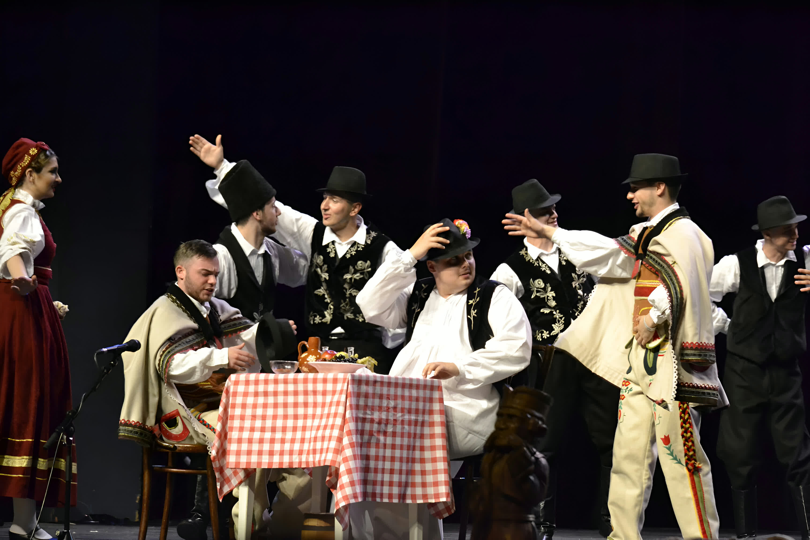
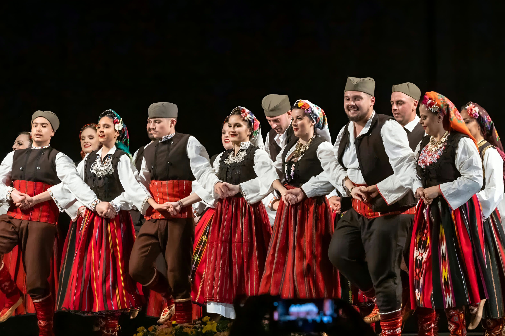
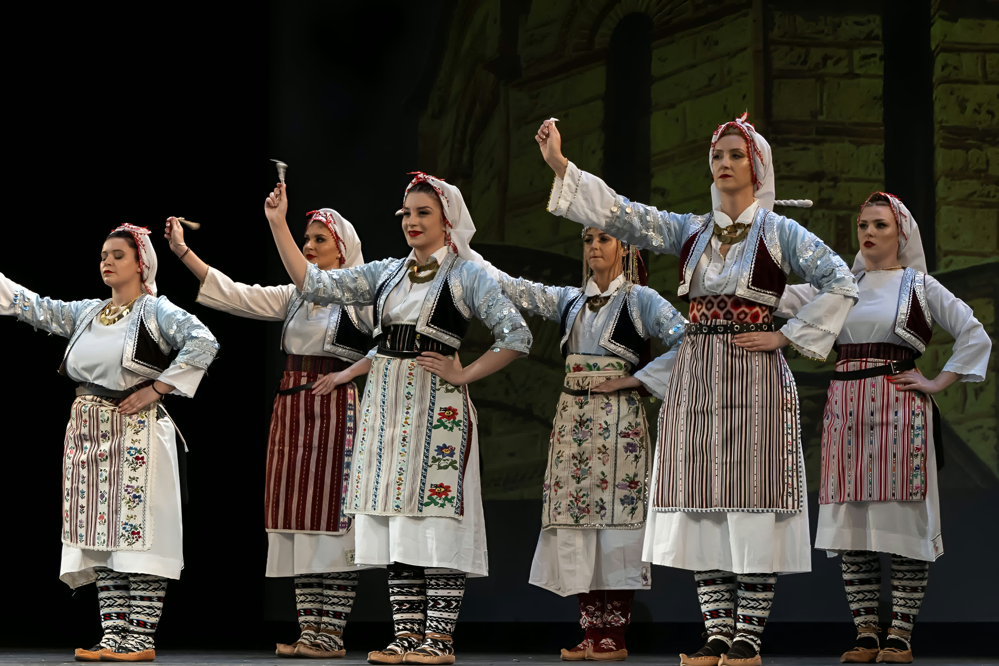

Associazione Culturale Serba
PONTES-MOSTOVI
Trieste, Italia
DAL 2008 CUSTODIAMO E VALORIZZIAMO LA CULTURA, LE TRADIZIONI ED IL PATRIMONIO IMMATERIALE DELLA SERBIA.
L'ASSOCIAZIONE CULTURALE SERBA "PONTES-MOSTOVI" NASCE CON IL DESIDERIO DI PRESERVARE E TRAMANDARE IL PATRIMONIO MUSICALE E FOLKLORISTICO DELLA SERBIA. ATTRAVERSO I BALLI POPOLARI, I CANTI ED I COSTUMI TRADIZIONALI, RACCONTIAMO LA STORIA DI UN POPOLO RICCO DI COLORI, MELODIE E TRADIZIONI CHE ATTRAVERSANO I SECOLI.



Più di 100 soci fanno già parte della nostra grande famiglia; divisi per età in 5 gruppi, imparano balli tradizionali Serbi e gli ridanno nuova vita esibendosi per il pubblico non solo locale ma anche internazionale. L'Associazio infatti ha avuto l'onore di partecipare ad innumerevoli manifestazioni, festival e concerti in Italia e in Europa, esibendosi anche in Spagna, Francia, Austria, Ungheria, Repubblica Ceca e molti altri.
Scopri di più